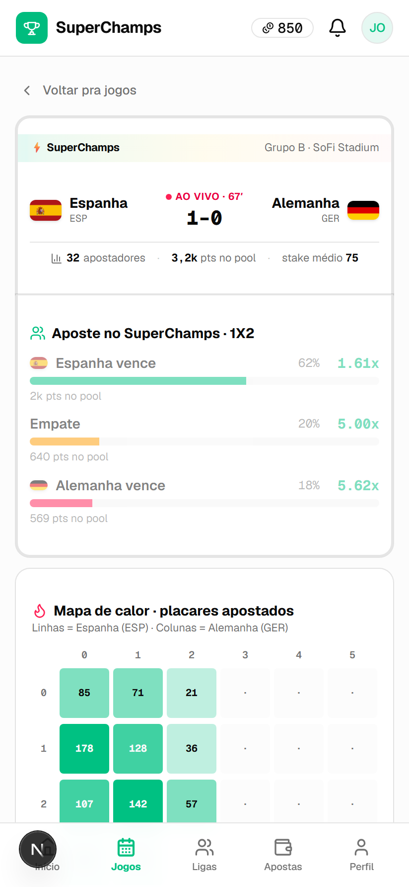
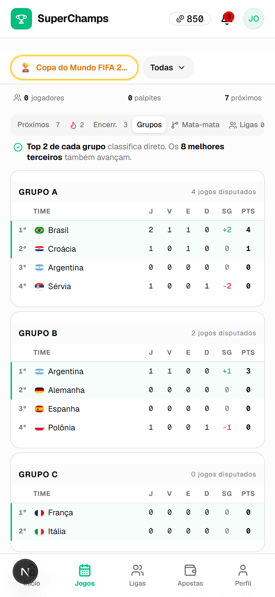
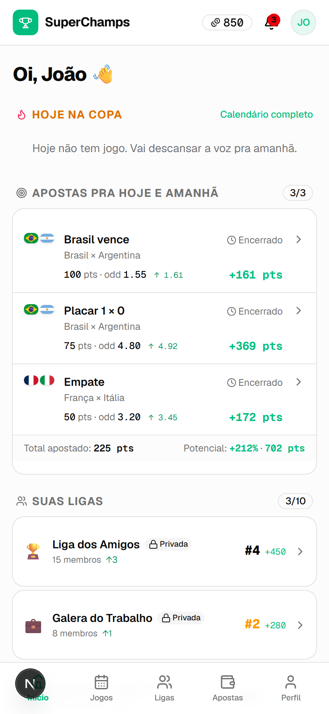
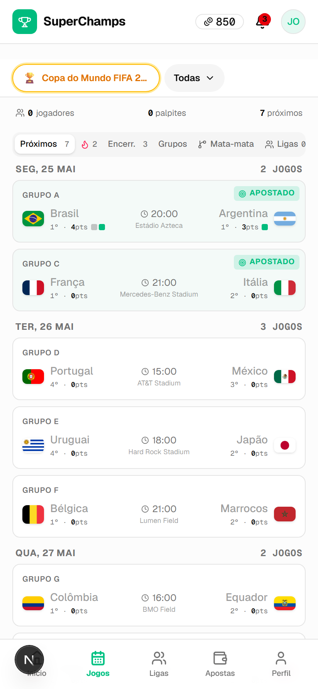
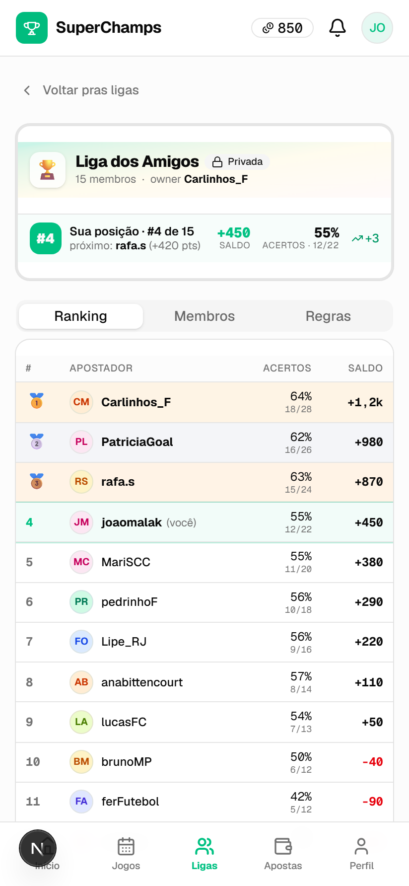
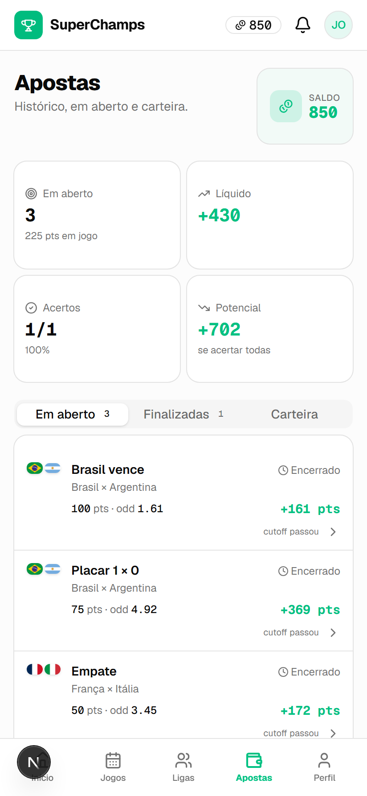

As odds nascem do pool de palpites do grupo — não de uma casa de apostas. Sem dinheiro real: só palpite, ranking e zoeira.
Parimutuel (apostas mútuas, como no turfe): todos apostam pontos num resultado, e o retorno de cada resultado depende de como o grupo distribuiu os palpites. Favorito lotado paga pouco; a zebra paga muito.
Cada jogador aposta pontos virtuais num resultado (1×2 ou placar exato). Começa com 1.000 pts.
A odd de cada resultado = share do pool. Reage ao vivo conforme o grupo aposta. Sem casa, sem margem.
No fim do jogo, quem acertou divide o pool proporcional ao stake. Ranking nas ligas sobe.
Capturas do app rodando — da mecânica parimutuel de cada jogo à fase de grupos da Copa.






Fase de grupos + bracket do mata-mata, placar exato, pênaltis. Sync automático de fixtures e resultados.
Liquidação atômica no Postgres (RPCs SECURITY DEFINER). Stake máx 50%, cancelar até 5min antes, hedge permitido.
Públicas e privadas, ranking por saldo, desempate por nº de acertos, convite por código.
Apostas públicas, perfil aberto, histórico — cultura anti-casa, sem “retorno garantido”.
1.000 pts iniciais, reset por competição, boost de saldo baixo, bônus de indicação. Zero dinheiro real.
Web responsiva instalável, tema claro/escuro, onboarding com aposta-tutorial.
┌─────────────────────────────┐
Browser → │ Next.js 16 (App Router) │ RSC + Server Actions
│ Tailwind 4 + shadcn/ui │
└──────────────┬──────────────┘
│ (RLS por usuário)
┌──────────────▼──────────────┐
│ Supabase │
│ Postgres + RLS + Auth │
│ RPCs SECURITY DEFINER: │ place_bet · settle_match
│ settlement parimutuel │ reset_balances · boost
└──────────────┬──────────────┘
│ pg_cron
┌──────────────▼──────────────┐
│ Edge Functions (Deno) │
│ sync-fixtures · live-scores│ → API esportiva
│ settle-match · drip │
└─────────────────────────────┘
Toda aposta entra por função server-side auditável — nunca direto do cliente. O settlement parimutuel é atômico no banco.